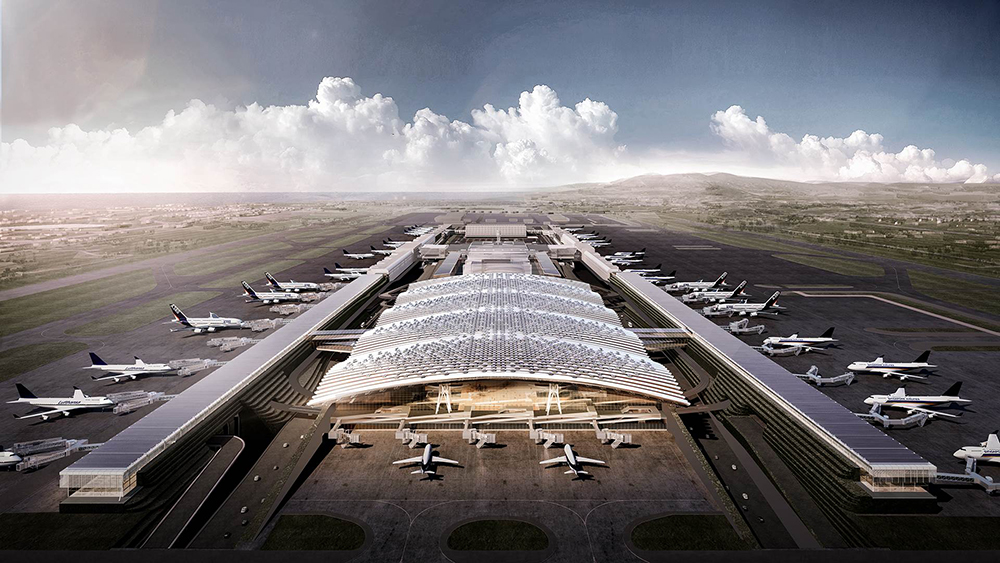

遊戲轉場-黑區塊
遊戲轉場-Fadein
未來展望
目前成果頁面
Right
關閉
第三航廈
第三航站區建設計畫

T3 位於桃園國際機場第二航廈(T2) 及華航園區之間。本案基地面積約640,000m2，其設計容量131 年服務每年4,500 萬旅客人次為目標。 主要開發內容，在建築物部分將包括第三航廈及登機廊廳、多功能大樓等，基礎建設部分將包括勤務道路系統、停機坪與相關滑行道、自動旅客運輸系統、站區聯外道路等相關設施。桃園國際機場以成為服務東亞航空市場的大型樞紐機場為目標，將以多功能大樓(MFB) 串連第二航廈，形成Mega-Terminal 概念，以Smart, Green, Culture 為設計主軸，高效能地作業方式、提供旅客優質服務與交通功能外，更將進一步發展成為永續經營的智慧機場，同時成為集觀光、購物、人文、藝術為一體之綜合性設施，打造全新的旅行經驗。
Center
關閉
第三航廈
第三航站區建設計畫
T3 位於桃園國際機場第二航廈(T2) 及華航園區之間。本案基地面積約640,000m2，其設計容量131 年服務每年4,500 萬旅客人次為目標。 主要開發內容，在建築物部分將包括第三航廈及登機廊廳、多功能大樓等，基礎建設部分將包括勤務道路系統、停機坪與相關滑行道、自動旅客運輸系統、站區聯外道路等相關設施。桃園國際機場以成為服務東亞航空市場的大型樞紐機場為目標，將以多功能大樓(MFB) 串連第二航廈，形成Mega-Terminal 概念，以Smart, Green, Culture 為設計主軸，高效能地作業方式、提供旅客優質服務與交通功能外，更將進一步發展成為永續經營的智慧機場，同時成為集觀光、購物、人文、藝術為一體之綜合性設施，打造全新的旅行經驗。
點我PLAY
一起來了解
綠色桃園機場吧!